Skip to content
Install R and RStudio for (Mac) OSX
R
- go to cran.r-project.org
- click on "Download R for (Mac) OS X" 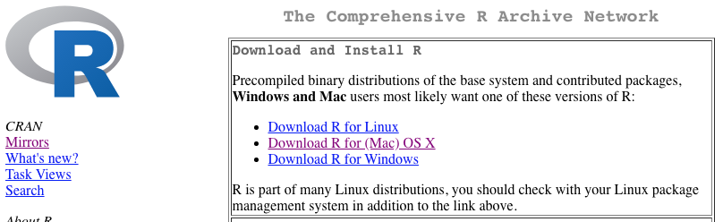
- choose the most recent version of the one fits your OSX
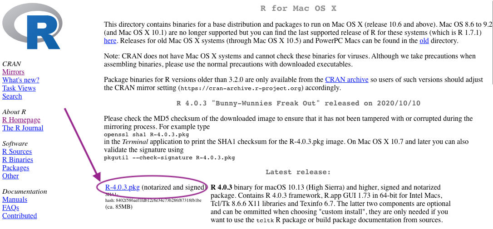
- go through installation process
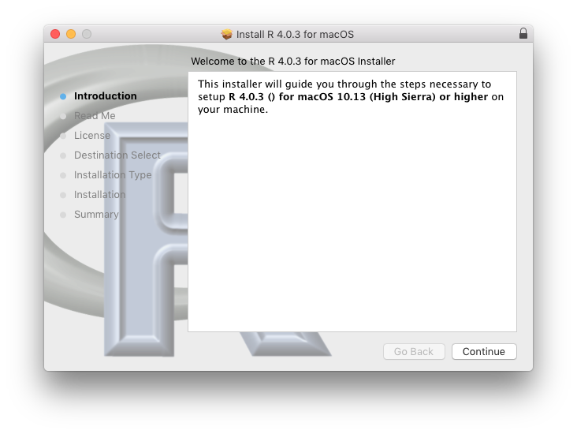
- locate R in applications folder 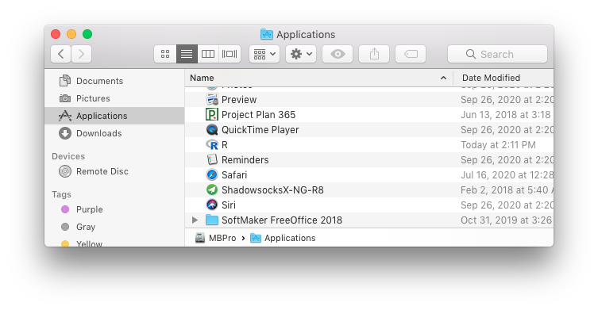
- open R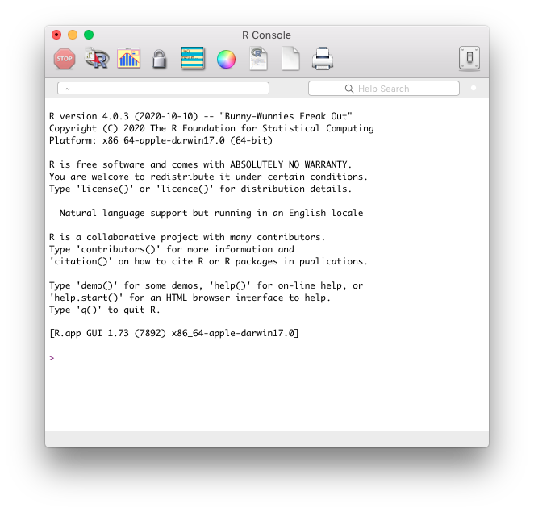
RStudio
- go to rstudio.com
- under products, select RStudio 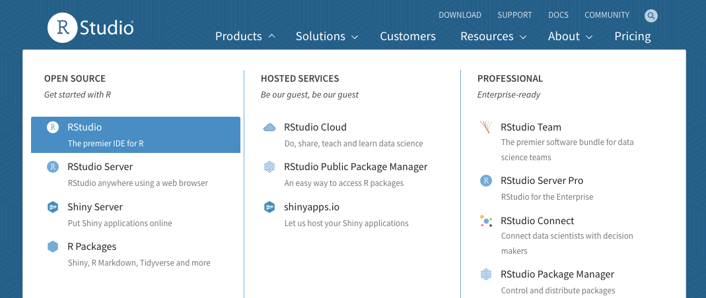
- choose RStudio Desktop 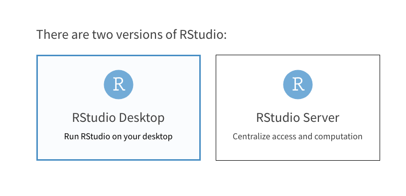
- choose opensource edition 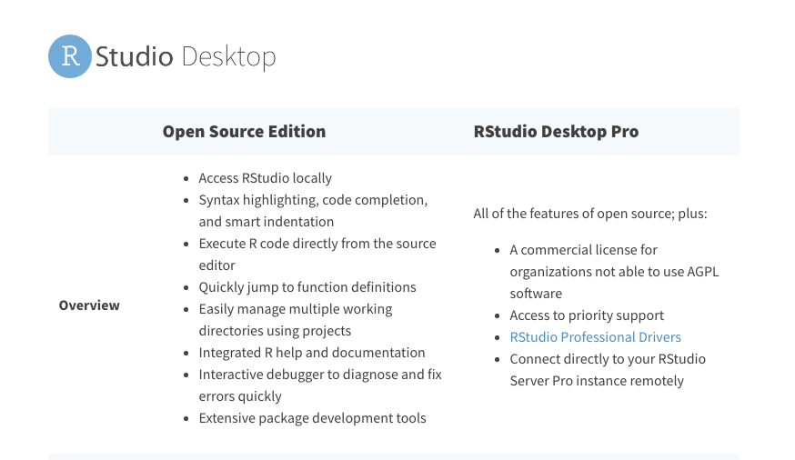
- download the free version 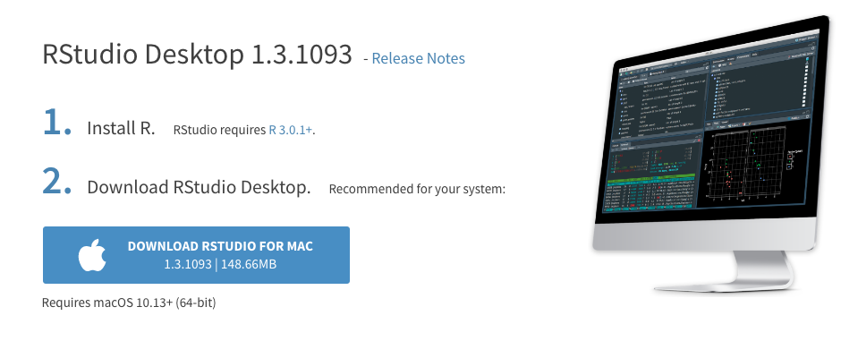
- open dmg, drag RStudio in Applications folder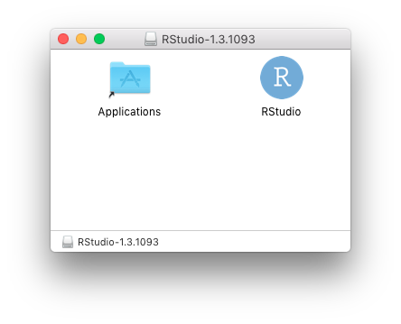
- locate RStudio in Applications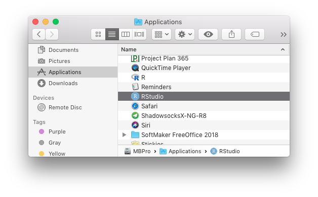
- open RStudio, and you are ready to roll! 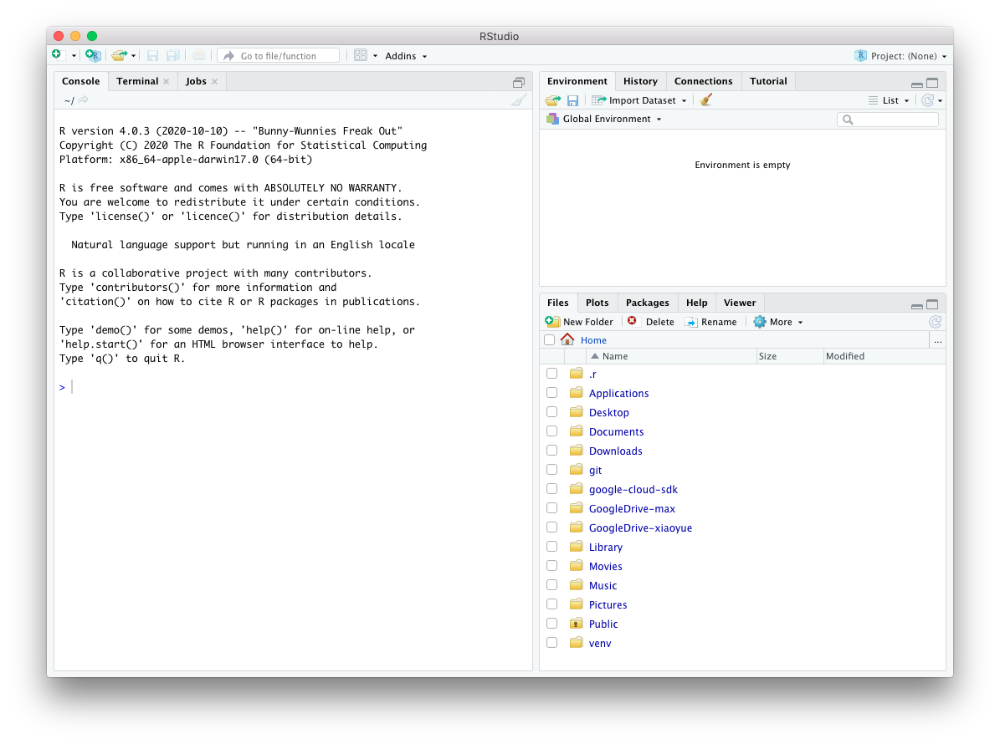